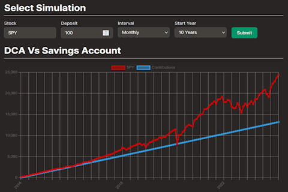

Tortoise Investing
What is it?
 The Tortoise Investing tool was created by a team of myself and three others during the GrizzHacks 6 24-hour hackathon. It was designed to be an educational tool to introduce the dollar cost averaging investment strategy to an audience of people who were either new or wary to investing. It accomplishes this in two ways. First, it explains how the strategy works using simple terms. Secondly, it gives the user access to an interactive simulation. This simulation lets you select a stock ticker of choice, a time period between each investment, and an amount of money to invest per period time. Then the results are shown in a graph, comparing how much money the user would have had at any one point in time should they have followed either the dca strategy, or put the same amount of money into a savings account.
Demo
How was it made?
This webapp was made using
NextJS for the
backend/frontend. We also used tailwind for the styling, and
ChartJS for
the chart displays. It works by accessing a yahoo finance api that
provides us with historical stock price data in the csv format. We
then parse this data and simulate the dca investment strategy on the
backend before sending it to the client component containing the
chart on the front end.
This was admittedly a very simple project for a hackathon, but we
intentionally made this decision so we could focus more on UI and
some other events like the CTF that was hosted, which turned out
really well for us.
Tortoise Investing inc. claiming their spoils from the CTF
tournament.
NaveenJohn
(Left), Ashton, 4
Bean Bags (Center),
Jobin, Ryan